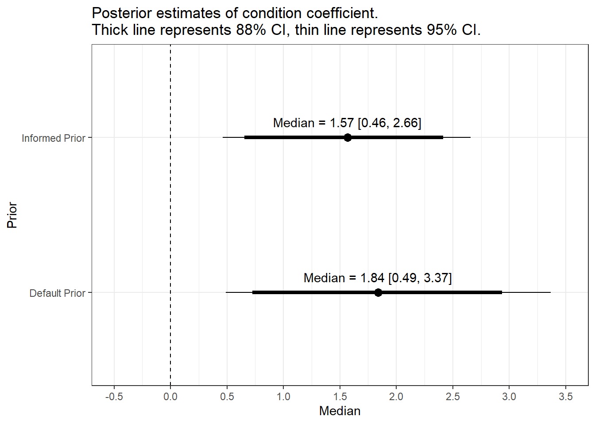

D Plotting coefficients under different priors
# Read informed priors model
Schroeder_1 <- read_rds("Models/Schroeder_model1.rds")
Model1_estimates <- describe_posterior(Schroeder_1, ci = c(.88, .95))
Model1_estimates <- Model1_estimates %>%
select(Parameter:CI_high) %>%
filter(Parameter == "b_CONDITION1") %>%
mutate(Parameter = "Condition",
Prior = "Informed Prior") %>%
as.data.frame()
# Read default priors model
Schroeder_2 <- read_rds("Models/Schroeder_model2.rds")
Model2_estimates <- describe_posterior(Schroeder_2, ci = c(.88, .95))
Model2_estimates <- Model2_estimates %>%
select(Parameter:CI_high) %>%
filter(Parameter == "b_CONDITION1") %>%
mutate(Parameter = "Condition",
Prior = "Default Prior") %>%
as.data.frame()
estimates_data_wide <- bind_rows(Model1_estimates, Model2_estimates) %>%
pivot_wider(names_from = CI, values_from = CI_low:CI_high) %>%
mutate(text = paste0("Median = ", round(Median, 2), " [", round(CI_low_0.95, 2), ", ", round(CI_high_0.95, 2), "]"))
estimates_data_wide %>%
ggplot(aes(x = Prior, y = Median, label = text)) +
geom_point(size = 3) +
geom_linerange(aes(ymin=CI_low_0.88, ymax=CI_high_0.88), linewidth = 1.5) + # 88% CI
geom_linerange(aes(ymin=CI_low_0.95, ymax=CI_high_0.95), linewidth = 0.5) + # 95% CI
scale_y_continuous(limits = c(-0.5, 3.5), breaks = seq(-0.5, 3.5, 0.5)) +
geom_text(nudge_x = 0.1) +
geom_hline(yintercept = 0, linetype = 2) +
coord_flip() +
labs(title = "Posterior estimates of condition coefficient. \nThick line represents 88% CI, thin line represents 95% CI.")
Bastian, B., Jetten, J., & Ferris, L. J. (2014). Pain as Social Glue: Shared Pain Increases Cooperation. Psychological Science, 25(11), 2079–2085. https://doi.org/10.1177/0956797614545886
Brandt, M. J., IJzerman, H., & Blanken, I. (2014). Does Recalling Moral Behavior Change the Perception of Brightness? Social Psychology, 45(3), 246–252. https://doi.org/10.1027/1864-9335/a000191
Bürkner, P.-C. (2017). Brms: An R Package for Bayesian Multilevel Models Using Stan. Journal of Statistical Software, 80(1). https://doi.org/10.18637/jss.v080.i01
Bürkner, P.-C., & Vuorre, M. (2019). Ordinal Regression Models in Psychology: A Tutorial. Advances in Methods and Practices in Psychological Science, 2(1), 77–101. https://doi.org/10.1177/2515245918823199
Coleman, T. J., Bartlett, J. E., Holcombe, J., Swanson, S. B., Atkinson, A. R., Silver, C., & Hood, R. (2019). Absorption, Mentalizing, and Mysticism: Sensing the Presence of the Divine. Journal for the Cognitive Science of Religion, 5(1), 63–84. https://doi.org/10.31234/osf.io/k5fp8
Doorn, J. van, Bergh, D. van den, Böhm, U., Dablander, F., Derks, K., Draws, T., Etz, A., Evans, N. J., Gronau, Q. F., Haaf, J. M., Hinne, M., Kucharský, Š., Ly, A., Marsman, M., Matzke, D., Gupta, A. R. K. N., Sarafoglou, A., Stefan, A., Voelkel, J. G., & Wagenmakers, E.-J. (2021). The JASP guidelines for conducting and reporting a Bayesian analysis. Psychonomic Bulletin & Review, 28(3), 813–826. https://doi.org/10.3758/s13423-020-01798-5
Flores, R. D., Sanders, C. A., Duan, S. X., Bishop-Chrzanowski, B. M., Oyler, D. L., Shim, H., Clocksin, H. E., Miller, A. P., & Merkle, E. C. (2022). Before/after Bayes: A comparison of frequentist and Bayesian mixed-effects models in applied psychological research. British Journal of Psychology, 113(4), 1164–1194. https://doi.org/10.1111/bjop.12585
Heino, M. T. J., Vuorre, M., & Hankonen, N. (2018). Bayesian evaluation of behavior change interventions: A brief introduction and a practical example. Health Psychology and Behavioral Medicine, 6(1), 49–78. https://doi.org/10.1080/21642850.2018.1428102
Kruschke, J. K. (2021). Bayesian Analysis Reporting Guidelines. Nature Human Behaviour, 5(10), 1282–1291. https://doi.org/10.1038/s41562-021-01177-7
Kruschke, J. K. (2015). Doing Bayesian Data Analysis: A Tutorial with R, JAGS, and Stan. (2nd ed.). Academic Press.
Kruschke, J. K., & Liddell, T. M. (2018a). Bayesian data analysis for newcomers. Psychonomic Bulletin & Review, 25(1), 155–177. https://doi.org/10.3758/s13423-017-1272-1
Kruschke, J. K., & Liddell, T. M. (2018b). The Bayesian New Statistics: Hypothesis testing, estimation, meta-analysis, and power analysis from a Bayesian perspective. Psychonomic Bulletin & Review, 25(1), 178–206. https://doi.org/10.3758/s13423-016-1221-4
Lenth, R. V. (2022). Emmeans: Estimated marginal means, aka least-squares means. https://CRAN.R-project.org/package=emmeans
Lüdecke, D., Patil, I., Ben-Shachar, M. S., Wiernik, B. M., Waggoner, P., & Makowski, D. (2021). see: An R package for visualizing statistical models. Journal of Open Source Software, 6(64), 3393. https://doi.org/10.21105/joss.03393
Makowski, D., Ben-Shachar, M. S., & Lüdecke, D. (2019). bayestestR: Describing effects and their uncertainty, existence and significance within the bayesian framework. Journal of Open Source Software, 4(40), 1541. https://doi.org/10.21105/joss.01541
McElreath, R. (2020). Statistical Rethinking: A Bayesian Course with Examples in R and Stan (2nd ed.). CRC Press.
Mehr, S. A., Song, L. A., & Spelke, E. S. (2016). For 5-Month-Old Infants, Melodies Are Social. Psychological Science, 27(4), 486–501. https://doi.org/10.1177/0956797615626691
Morey, R. D., & Rouder, J. N. (2022). BayesFactor: Computation of bayes factors for common designs. https://CRAN.R-project.org/package=BayesFactor
Ravenzwaaij, D. van, Cassey, P., & Brown, S. D. (2018). A simple introduction to Markov Chain Monte-Carlo sampling. Psychonomic Bulletin & Review, 25(1), 143–154. https://doi.org/10.3758/s13423-016-1015-8
Reimers, S., & Stewart, N. (2015). Presentation and response timing accuracy in Adobe Flash and HTML5/JavaScript Web experiments. Behavior Research Methods, 47(2), 309–327. https://doi.org/10.3758/s13428-014-0471-1
Rouder, J. N. (2014). Optional stopping: No problem for Bayesians. Psychonomic Bulletin & Review, 21(2), 301–308. https://doi.org/10.3758/s13423-014-0595-4
Schönbrodt, F. D., Wagenmakers, E.-J., Zehetleitner, M., & Perugini, M. (2017). Sequential hypothesis testing with Bayes factors: Efficiently testing mean differences. Psychological Methods, 22(2), 322–339. https://doi.org/10.1037/met0000061
Schoot, R. van de, Depaoli, S., King, R., Kramer, B., Märtens, K., Tadesse, M. G., Vannucci, M., Gelman, A., Veen, D., Willemsen, J., & Yau, C. (2021). Bayesian statistics and modelling. Nature Reviews Methods Primers, 1(1), 1–26. https://doi.org/10.1038/s43586-020-00001-2
Schroeder, J., & Epley, N. (2015). The Sound of Intellect: Speech Reveals a Thoughtful Mind, Increasing a Job Candidate’s Appeal. Psychological Science, 26(6), 877–891. https://doi.org/10.1177/0956797615572906
Wagenmakers, E.-J., Wetzels, R., Borsboom, D., & Maas, H. L. J. van der. (2011). Why psychologists must change the way they analyze their data: The case of psi: Comment on Bem (2011). Journal of Personality and Social Psychology, 100(3), 426–432. https://doi.org/10.1037/a0022790
Wickham, H. (2022). Tidyverse: Easily install and load the tidyverse. https://CRAN.R-project.org/package=tidyverse
Winter, B., & Bürkner, P.-C. (2021). Poisson regression for linguists: A tutorial introduction to modelling count data with brms. Language and Linguistics Compass, 15(11), e12439. https://doi.org/10.1111/lnc3.12439
Wong, T. K., Kiers, H., & Tendeiro, J. (2021). On the Potential Mismatch between the Function of the Bayes Factor and Researchers’ Expectations. PsyArXiv. https://doi.org/10.31234/osf.io/86p4k
Xie, Y. (2022). Tinytex: Helper functions to install and maintain TeX live, and compile LaTeX documents. https://github.com/rstudio/tinytex
Zwaan, R. A., Pecher, D., Paolacci, G., Bouwmeester, S., Verkoeijen, P., Dijkstra, K., & Zeelenberg, R. (2018). Participant Nonnaiveté and the reproducibility of cognitive psychology. Psychonomic Bulletin & Review, 25(5), 1968–1972. https://doi.org/10.3758/s13423-017-1348-y